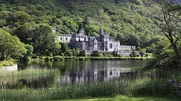
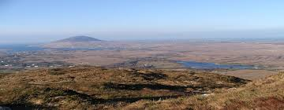
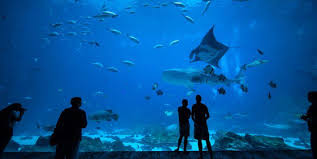

Connacht
Top 5 tourist attractions
Restaurants
- Roscommon:The purple onion kitchen
- Letrim: The Orasman
- Galway: The Twelve Pins
- Sligo: Killorans Traditional Restaurant & Lounge Bar
- Westmeath:The Galler Bistro
1.Kylemore Abbey

Kylemore Abbey is a Benedictine monastery founded in 1920 on the grounds of Kylemore Castle, in Connemara, County Galway, Ireland. The abbey was founded for Benedictine Nuns who fled Belgium in World War.
2.Croagh Patrick

Croagh Patrick, nicknamed the Reek, is a 764 metres mountain and an important site of pilgrimage in County Mayo.
3.Connemara National Park

Connemara National Park is one of six national parks in the Republic of Ireland that are managed by the National Parks and Wildlife Service of the Department of Arts, Heritage and the Gaeltacht
4.Lough Key Forest Park

Lough Key Forest Park is an 800-hectare park on the southern shore of Lough Key. It is a great activity centre for families.
5.Galway Atlantaquaria

Aquarium featuring native Irish sealife, popular fish feeding sessions & touch pools.